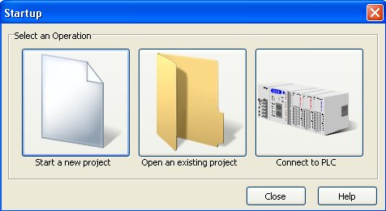
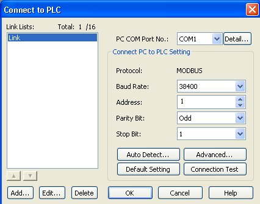
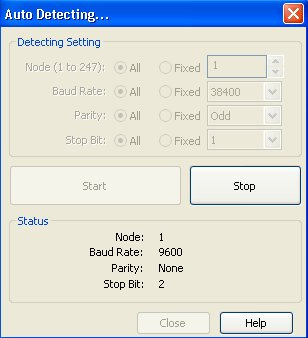
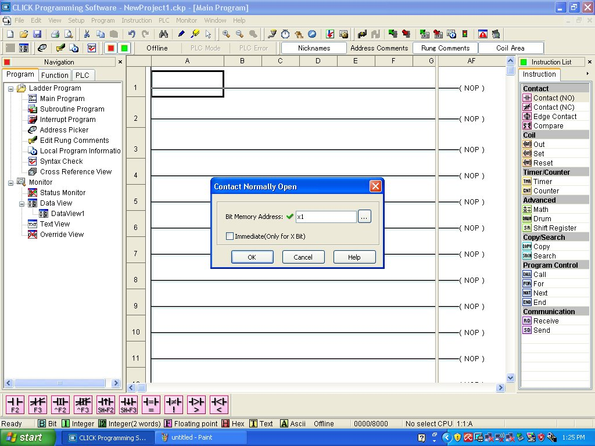
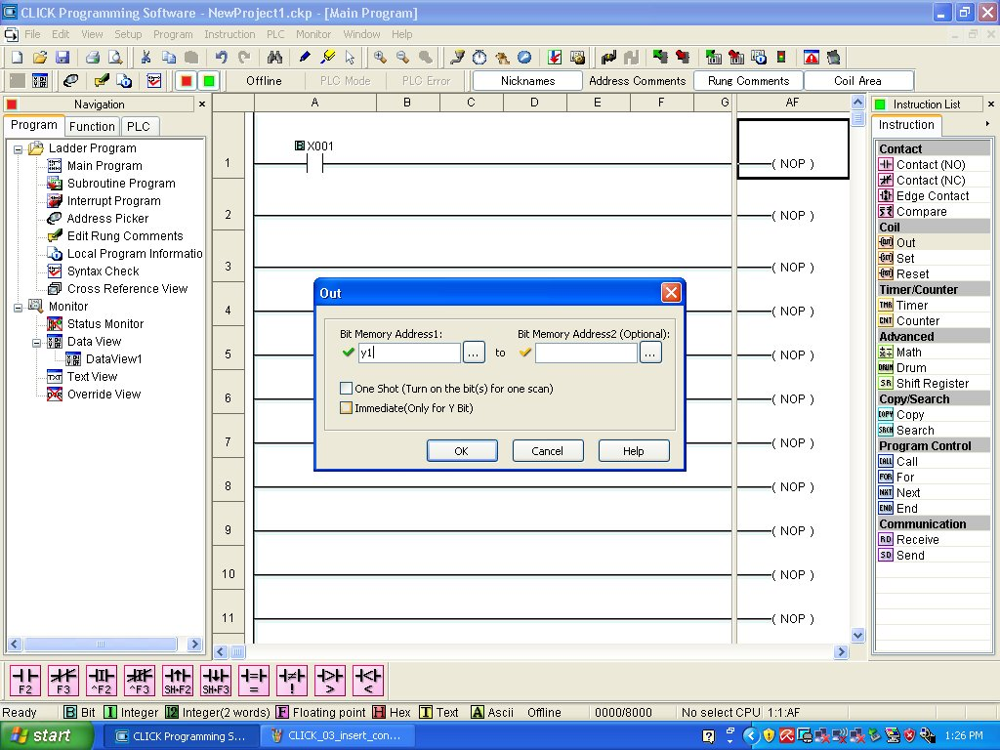
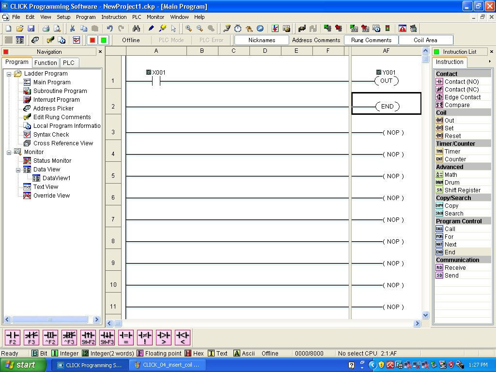
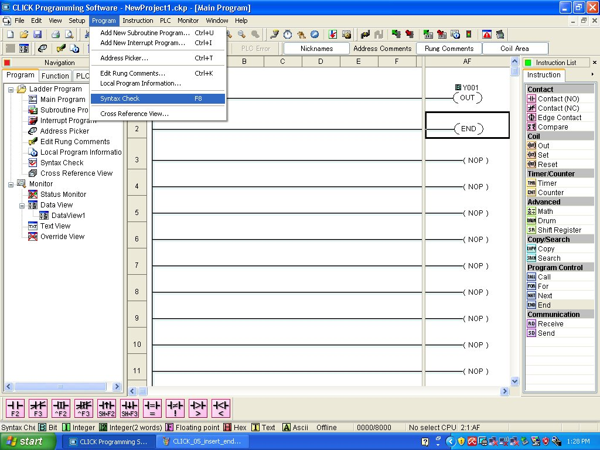
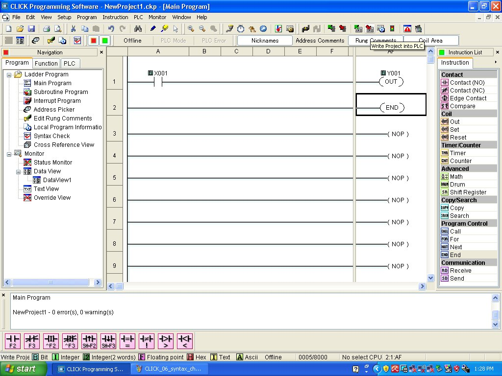

Automation Direct "CLICK" PLCs are programmed using only one application program. This tutorial steps you through the use of CLICK Programming Software as though you were using it for the very first time.
When you start up the CLICK Programming Software application, you will immediately see a window offering your three choices -- start a new project, open an existing project, or connect to the PLC:

The first two choices begin by opening a file on your PC's hard drive, where you may create or edit a ladder diagram PLC program in ``offline'' mode (i.e. while not communicating with the PLC). The last choice connects you to the PLC so that you begin with whatever program currently existing in the PLC's memory.
If you choose the last option, you will be shown a window preparing you to begin digital communication with the PLC:

AS with most PLCs, the default assumption is that you will be communicating via an RS-232 serial connection (i.e. a ``COM'' port in PC terminology). If you are trying to connect to your PLC via a USB port and serial adapter, you will likely need to click on the ``Detail...'' button to have the software show you all available COM devices. If you have the correct driver installed for your USB-to-serial adapter, and it is plugged into a USB port on your PC, it should show up as an available COM device which you may then select and use for PC-to-PLC communications.
Once you have selected the proper COM port, the easiest step to do next is to have the software ``Auto-Detect'' the PLC. Clicking on the ``Auto-Detect...'' button begins this process, where the software attempts all combinations of baud rate, parity, and stop bits to find a combination that works with the PLC:

Whether you have chosen to write a program offline, or modify the program inside the PLC (online), your next steps will be done within the programming software environment. Here, you see a set of empty rungs waiting to be populated with instructions. The ``Instruction List'' on the right-hand side of the window shows you all the available ladder-diagram symbols, including contacts and coils. Here, I have clicked and ``dragged'' a normally-open contact onto the left-hand side of the first rung, and then the software prompts me to enter the address of the bit this contact instruction will read:

In this example, I have entered the address X1 for this normally-open contact. One way to select appropriate addresses is to click on the ``...'' button to the right of the bit address field, which will open up an ``Address Picker'' window showing all the available bit addresses within the PLC's memory. Double-clicking on any entry in the Address Picker will then assign that bit address to the contact.
Next, you may click and drag an output coil from the Instruction List to the right-hand side of the same rung. Once again, a dialog window will open asking for the address of the bit to be associated with this coil:

In this example, I have selected Y1 as the bit address for this coil. As when placing the contact on the rung, it does not appear on the screen until after you have assigned an address to it.
One more instruction needs to be added to this program to make it complete: an END instruction. Without this instruction at the end of the ladder diagram program, the PLC will not know when to stop scanning empty rungs and return once more to the first rung of the program.

At this point, we are ready to verify the program to check for errors. A ``Syntax Check'' feature exists within the ``Program Menu'', which may also be invoked simply by pressing the F8 function key on your PC's keyboard:

If the syntax check goes okay, a message will appear at the bottom of the window declaring no errors have been found, which means the program is ready to download to the PLC. To begin the download process, click on the icon with the red arrow pointing toward the PLC, seen here just above the letter ``C'' in ``Rung Comments'' near the top of the window:

The downloading process will begin with some further prompting from you, and then the PLC may be placed into run mode and tested!
An annoying feature of the CLICK programming software is that it does not default to showing the status of program elements while it is ``online'' (communicating with the PLC). Instead, you often have to command the software to display the status. To do this, pull down the ``Monitor'' menu and select ``Status Monitor'' (alternatively, pressing the ``Ctrl-Shift-S'' key combination will cause the status monitor to become active).